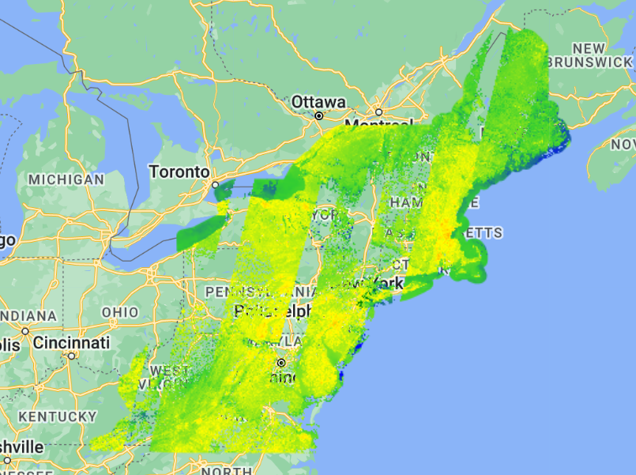

// The shape files need to be uploaded to Google Earth Engine.
var NEMIA = NEMIA Shape File
var Fields = Fields Shape File
Map.addLayer(NEMIA, { color: 'red' });
Map.centerObject(NEMIA, 4);
Map.addLayer(Fields, { color: 'green' }, 'Fields');
var landsat8 = ee.ImageCollection("LANDSAT/LC08/C02/T1_L2");
var landsat8Filtered = landsat8.filterBounds(NEMIA);
var landsat8DateFiltered = landsat8Filtered.filterDate('2018-06-01', '2018-06-30');
// Cloud masking function
var masking = function (img) {
var cloudshadowBitmask = (1 << 4);
var cloudshadowmask = (1 << 3);
var cirus = (1 << 2);
var qa = img.select('QA_PIXEL');
var maskshadow = qa.bitwiseAnd(cloudshadowBitmask).eq(0);
var maskcloud = qa.bitwiseAnd(cloudshadowmask).eq(0);
var maskValue2 = qa.bitwiseAnd(cirus).eq(0); // Add bit mask for value 2
var mask = maskshadow.and(maskcloud).and(maskValue2); // Include new mask
return img.updateMask(mask);
};
var cloudFreeImage = landsat8DateFiltered.sort('CLOUD_COVER_LAND')
.map(masking)
.mean();
var clippedImage = cloudFreeImage.clip(NEMIA);
// Apply scaling factors
var scale = function applyScaleFactors(image) {
var opticalBands = image.select('SR_B.').multiply(0.0000275).add(-0.2);
var thermalBands = image.select('ST_B.*').multiply(0.00341802).add(149.0);
return image.addBands(opticalBands, null, true)
.addBands(thermalBands, null, true);
};
var scaledImage = scale(clippedImage);
Map.addLayer(scaledImage);
var thermalBand = scaledImage.select('ST_B10');
var LSTcelcius = thermalBand.subtract(273.15);
var LST_Color = { min: 0, max: 30, palette: ['blue', 'limegreen', 'yellow', 'orange'] };
Map.addLayer(LSTcelcius, LST_Color, 'LST1');
// Set the desired resolution to 30 meters
var desiredResolution = 30;
// Reproject LSTcelcius to the desired resolution
var LSTcelcius30m = LSTcelcius.reproject({
crs: LSTcelcius.projection().crs(),
scale: desiredResolution,
});
// Extract values from LSTcelcius raster to points
var extractedDataFields = LSTcelcius30m.reduceRegions({
collection: Fields,
reducer: ee.Reducer.first(),
scale: desiredResolution,
});
// Export the extracted data to a CSV file
Export.table.toDrive({
collection: extractedDataFields,
description: 'Points_Fields_June_2018',
folder: 'L8_Points_Fields_Seminar',
fileFormat: 'CSV',
});Retrieving and extracting Land Surface Temperature (LST) values from Landsat 8 satellite
To retrieve Land Surface Temperature data, I utilized Google Earth Engine, a web application that allowed me to write code based on physical remote sensing principles. I specifically used band 10, which is the thermal band on the Landsat 8 satellite, to extract LST values from the satellite’s data. (USGS, (n.d.))
To make the code function properly, I utilized a polygon layer named NEMIA that encompasses the eastern coast of North America. Additionally, I transformed the table of synthetic fields with corresponding coordinates into a point layer using ARC GIS PRO.
First, the code adds the layers representing NEMIA (in red) and Fields (in green) to the map. Then, it centers the view on NEMIA, and retrieves Landsat 8 imagery for June 2018 within NEMIA. To ensure the accuracy of data and eliminate cloud and shadow effects from Landsat imagery, a cloud masking function (masking) is introduced. This step is crucial in generating reliable temperature data, as clouds significantly affect remotely sensed LST by absorbing almost all surface-emitted thermal energy. Due to cloud contamination, most LST products derived from various algorithms have spatial discontinuities, as highlighted by Wang et al. (2019) in their research.
Next, the code calculates a cloud-free mean composite image using Landsat data and clips it to the NEMIA boundaries. Scaling factors are then applied to the optical and thermal bands to improve data quality and make it suitable for temperature analysis based on remote sensing physics (Earth Engine Data Catalog. (n.d.)). The land surface temperature (LST) is obtained from the thermal band of the Landsat imagery and converted into degrees Celsius. It is then displayed as a color-coded layer (LST1) on the map, visually representing the LST distribution.
To enhance the focus on synthetic grass and minimize the impact of the surrounding urban environment, the resolution for temperature data is set to 30 meters before projecting LST data. LST values are extracted from the reprojected data for each field. Finally, extracted LST data is exported as a CSV file.
